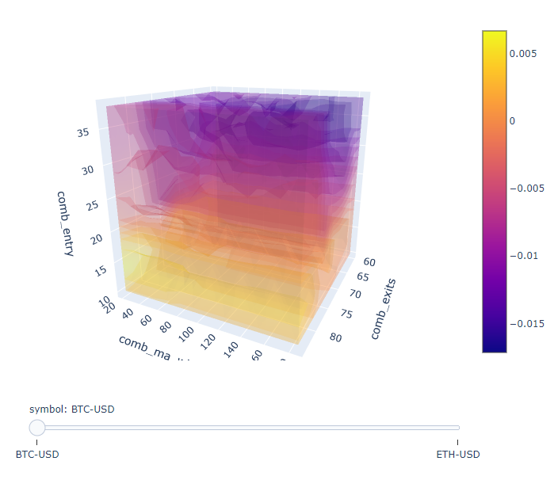

from_order_func 做資金加減碼
from numba import njit
from vectorbt.portfolio import nb
from vectorbt.portfolio.enums import Direction
import numpy as np
import vectorbt as vbt
import pandas as pd
import warnings
pd.options.display.float_format = lambda x: "%.2f" % x
warnings.simplefilter("ignore", UserWarning)
def simulate():
@njit
def order_func_nb(c, action, direction, fees):
# _size = 1000 / float(c.close[c.i, c.col])
# print(
# "Close:",
# c.close[c.i, c.col],
# "Direction:",
# direction,
# "c.i:",
# c.i,
# "c.col:",
# c.col,
# "fees:",
# fees,
# "_size:",
# round(_size, 2),
# "position_now:",
# c.position_now,
# "action:",
# action[c.i],
# )
size = 0
if action[c.i] == 1:
# 1000 / float(c.close[c.i, c.col]) 買入 1000 元的股票
size = 1000 / float(c.close[c.i, c.col])
elif action[c.i] == -1:
# -c.position_now 持有全部的股票賣出
size = -c.position_now
return nb.order_nb(
price=c.close[c.i, c.col], size=size, direction=direction, fees=fees,
)
# 加碼策略
action = pd.Series([1, 1, -1, 1, -1, 0, 0, 1, -1])
dates = pd.date_range("20220301", periods=len(action))
price = pd.DataFrame(
{"Price": [100, 200, 300, 400, 500, 600, 700, 800, 900]}, index=dates
)
fees = 0.002 # per frame
pf = vbt.Portfolio.from_order_func(
price,
order_func_nb,
np.asarray(action),
Direction.LongOnly,
fees,
init_cash=1000000,
)
orders_records_readable = pf.orders.records_readable.drop("Column", axis=1)
print(orders_records_readable.to_markdown(index=False, floatfmt=".2f"))
print(pf.assets().rename(columns={"Price": "assets"}))
print(pf.cash().rename(columns={"Price": "cash"}))
print(pf.stats())
if __name__ == "__main__":
simulate()
OrderContext
class OrderContext(tp.NamedTuple):
target_shape: tp.Shape # 目標形狀
group_lens: tp.Array1d # 分組長度
init_cash: tp.Array1d # 初始現金
cash_sharing: bool # 是否共享現金
call_seq: tp.Optional[tp.Array2d] # 呼叫順序
segment_mask: tp.ArrayLike # 分段遮罩
call_pre_segment: bool # 是否在分段之前呼叫
call_post_segment: bool # 是否在分段之後呼叫
close: tp.ArrayLike # 收盤價
ffill_val_price: bool # 是否向前填充估值價格
update_value: bool # 是否更新持倉估值
fill_pos_record: bool # 是否填充持倉紀錄
flex_2d: bool # 是否彈性處理2D數據
order_records: tp.RecordArray # 訂單紀錄
log_records: tp.RecordArray # 日誌紀錄
last_cash: tp.Array1d # 上次現金
last_position: tp.Array1d # 上次持倉
last_debt: tp.Array1d # 上次負債
last_free_cash: tp.Array1d # 上次自由現金
last_val_price: tp.Array1d # 上次估值價格
last_value: tp.Array1d # 上次持倉估值
second_last_value: tp.Array1d # 倒數第二次持倉估值
last_return: tp.Array1d # 上次收益率
last_oidx: tp.Array1d # 上次訂單索引
last_lidx: tp.Array1d # 上次日誌索引
last_pos_record: tp.RecordArray # 上次持倉紀錄
group: int # 分組
group_len: int # 分組長度
from_col: int # 起始欄位
to_col: int # 終止欄位
i: int # 迭代器
call_seq_now: tp.Optional[tp.Array1d] # 當前呼叫順序
col: int # 當前欄位
call_idx: int # 當前呼叫索引
cash_now: float # 現金餘額
position_now: float # 持倉量
debt_now: float # 負債金額
free_cash_now: float # 自由現金餘額
val_price_now: float # 估值價格
value_now: float # 持倉估值
return_now: float # 當前收益率
報告列出了許多評估指標：
Start：回測開始日期。
End：回測結束日期。
Period：回測時間段。
Start Value：回測開始時的資產價值。
End Value：回測結束時的資產價值。
Total Return [%]：回測期間的總回報率。
Benchmark Return [%]：基準指數的回報率。
Max Gross Exposure [%]：最大總槓桿率。
Total Fees Paid：交易費用總額。
Max Drawdown [%]：最大回撤率。
Max Drawdown Duration：最大回撤期間。
Total Trades：總交易次數。
Total Closed Trades：總平倉交易次數。
Total Open Trades：總持倉交易次數。
Open Trade PnL：未平倉交易的盈虧。
Win Rate [%]：勝率。
Best Trade [%]：最佳交易回報率。
Worst Trade [%]：最差交易回報率。
Avg Winning Trade [%]：平均勝利交易回報率。
Avg Losing Trade [%]：平均虧損交易回報率。
Avg Winning Trade Duration：平均勝利交易持續時間。
Avg Losing Trade Duration：平均虧損交易持續時間。
Profit Factor：盈虧比。
Expectancy：預期值。
Sharpe Ratio：夏普比率。
Calmar Ratio：卡爾馬比率。
Omega Ratio：歐米茄比率。
Sortino Ratio：索提諾比率。
其中一些指標的定義可能需要參考具體的金融概念，例如回報率、總槓桿率、回撤率、夏普比率等等。這些指標可以幫助用戶評估交易策略的表現，以便做出相應的調整和優化。
asset_flow
import numpy as np
from vectorbt.records.nb import col_map_nb
from vectorbt.portfolio.nb import simulate_from_orders_nb, asset_flow_nb
from vectorbt.portfolio.enums import Direction
close = np.array([1, 2, 3, 4, 5])[:, None]
order_records, _ = simulate_from_orders_nb(
target_shape=close.shape,
close=close,
group_lens=np.array([1]),
init_cash=np.array([100]),
call_seq=np.full(close.shape, 0)
)
print(order_records)
col_map = col_map_nb(order_records['col'], close.shape[1])
asset_flow = asset_flow_nb(close.shape, order_records, col_map, Direction.Both)
print(asset_flow)
資金1000 加碼 size 統計
import pandas as pd
# create a date range
dates = pd.date_range("20220301", periods=7)
# create a price dataframe
price = pd.DataFrame({"price": [50, 100, 200, 250, 300, 400, 500]}, index=dates)
# create entry and exit dataframes
entries = pd.DataFrame(
{"entry": [False, True, True, False, False, True, False]}, index=dates
)
exits = pd.DataFrame(
{"exit": [False, False, False, False, True, False, True]}, index=dates
)
# concatenate the dataframes horizontally
df = pd.concat([price, entries, exits], axis=1)
# calculate the size column based on entries and exits
size = []
current_size = 0
for i in range(len(df)):
if df["entry"][i]:
current_size = 1000 / df["price"][i]
elif df["exit"][i]:
current_size = -sum(size)
elif not df["entry"][i] and not df["exit"][i]:
current_size = 0
size.append(current_size)
# add the size column to the dataframe
df["size"] = size
# print the resulting dataframe
print(df)
from numba import njit
from vectorbt.portfolio import nb
from vectorbt.portfolio.enums import (
SizeType,
Direction,
NoOrder,
OrderStatus,
OrderSide,
)
import numpy as np
import vectorbt as vbt
import pandas as pd
import warnings
warnings.simplefilter("ignore", UserWarning)
@njit
def pre_sim_func_nb(c):
# We need to define stop price per column once
stop_price = np.full(c.target_shape[1], np.nan, dtype=np.float_)
return (stop_price,)
@njit
def order_func_nb(c, stop_price, entries, exits, size):
# Select info related to this order
entry_now = nb.get_elem_nb(c, entries)
exit_now = nb.get_elem_nb(c, exits)
size_now = nb.get_elem_nb(c, size)
price_now = nb.get_elem_nb(c, c.close)
stop_price_now = stop_price[c.col]
# Our logic
if entry_now:
if c.position_now == 0:
return nb.order_nb(
size=size_now, price=price_now, direction=Direction.LongOnly
)
elif exit_now or price_now >= stop_price_now:
if c.position_now > 0:
return nb.order_nb(
size=-size_now, price=price_now, direction=Direction.LongOnly
)
return NoOrder
@njit
def post_order_func_nb(c, stop_price, stop):
# Same broadcasting as for size
stop_now = nb.get_elem_nb(c, stop)
if c.order_result.status == OrderStatus.Filled:
if c.order_result.side == OrderSide.Buy:
# Position entered: Set stop condition
stop_price[c.col] = (1 + stop_now) * c.order_result.price
else:
# Position exited: Remove stop condition
stop_price[c.col] = np.nan
def simulate(close, entries, exits, size, threshold):
return vbt.Portfolio.from_order_func(
close,
order_func_nb,
vbt.Rep("entries"),
vbt.Rep("exits"),
vbt.Rep("size"), # order_args
pre_sim_func_nb=pre_sim_func_nb,
post_order_func_nb=post_order_func_nb,
post_order_args=(vbt.Rep("threshold"),),
broadcast_named_args=dict( # broadcast against each other
entries=entries, exits=exits, size=size, threshold=threshold
),
)
if __name__ == "__main__":
close = pd.Series([10, 11, 12, 13, 14])
entries = pd.Series([True, True, False, False, False])
exits = pd.Series([False, False, False, True, True])
pf = simulate(close, entries, exits, np.inf, 0.1)
print(pf.orders.records_readable)
print(pf.assets())
print(pf.cash())
print(pf.stats())
使用 from_order_func 動態加碼
from numba import njit
from vectorbt.utils.enum_ import map_enum_fields
from vectorbt.portfolio import nb
from vectorbt.portfolio.enums import (
SizeType,
Direction,
NoOrder,
OrderStatus,
OrderSide,
)
import yfinance as yf
import numpy as np
import vectorbt as vbt
import pandas as pd
import warnings
warnings.simplefilter("ignore", UserWarning)
# 下載股票價格數據
# symbols = ["GOOG"]
# raw_data = yf.download(symbols, start="2010-01-01", end="2023-03-09")
# close = raw_data.loc[:, "Close"]
# Buy 10 units each tick using closing price:
def test():
@njit
def order_func_nb(c, size):
return nb.order_nb(size=size)
close = pd.Series([1, 2, 3, 4, 5])
pf = vbt.Portfolio.from_order_func(close, order_func_nb, 10, init_cash=100000,)
print(pf.assets())
print(pf.cash())
print(pf.stats())
def from_order_function_test():
@njit
def order_func_nb(c, size, direction, fees):
print(
"Close:",
c.close[c.i, c.col],
"Size:",
size[c.i],
"Direction:",
direction[c.col],
"c.i:",
c.i,
"c.col:",
c.col,
"fees:",
fees,
)
return nb.order_nb(
price=c.close[c.i, c.col],
size=size[c.i],
direction=direction[c.col],
fees=fees,
)
if True:
# 加碼策略
size = pd.Series([1, 1, -2, 1, -1]) # per row
dates = pd.date_range("20220301", periods=5)
price = pd.DataFrame(
{"a": [100, 200, 300, 400, 500], "b": [500, 400, 300, 200, 100]},
index=dates,
) # per element
else:
size = pd.Series([1, -1, 1, -1]) # per row
dates = pd.date_range("20220301", periods=4)
price = pd.DataFrame(
{"a": [100, 200, 300, 400], "b": [400, 300, 200, 100]}, index=dates,
) # per element
direction = ["longonly", "shortonly"] # per column
fees = 0.01 # per frame
direction_num = map_enum_fields(direction, Direction)
pf = vbt.Portfolio.from_order_func(
price,
order_func_nb,
np.asarray(size),
np.asarray(direction_num),
fees,
init_cash=10000,
)
print(pf.orders.records_readable)
print(pf.assets())
print(pf.cash())
print(pf.stats())
if __name__ == "__main__":
# Disable scientific notation
pd.options.display.float_format = lambda x: "%.2f" % x
test()
print("\n=================================================\n")
from_order_function_test()
VectotBT example
from datetime import datetime
import vectorbt as vbt
interval = '4h'
cols = ['Open', 'High', 'Low', 'Close', 'Volume']
start_str = '360 days ago UTC'
end_str = f'{datetime.now()}'
#symbols = ["BTCUSDT", "ETHUSDT", "LTCUSDT", "BNBUSDT", "XRPUSDT"]
symbols = ["BTCUSDT"]
df = vbt.BinanceData.download(symbols,start=start_str,interval=interval).get(cols)
ma99 = vbt.MA.run(df["Close"], 99, short_name="ma99")
entries = ma99.close_crossed_above(ma99.ma)
exits = ma99.close_crossed_below(ma99.ma)
pf = vbt.Portfolio.from_signals(df["Close"], entries, exits)
print(pf.stats())
Python筆記 : 股票策略回測 by Vectorbt
大致介紹
vectorbt是一套拿來進行量化分析的套件，特別的點在於他有numpy的速度,以及pandas的方便性。 因此比起其他的回測套件，他擁有極佳的速度，可以在短時間之內分析大量的策略。其中，套到這個套件裡面的所有參數都可以進行向量化，允許我們同時對所有元素執行相同的操作。另外，也使用 Numba 解決了與向量化相關的路徑依賴問題。
這邊大部分使用的套件說明都可以在這裡看到詳細說明。
模組
import vectorbt as vbt
# import plotly 可不用，因vectorbt有自帶視覺化套件
import datetime
import pandas as pd
import numpy as np
時間設定以及視覺化分析資料的位置
filename='某個位置路徑'
end_date=datetime.datetime.now()
start_date=end_date - datetime.timedelta(days=3) #限制在3天之內
這邊設3天是因為等等要抓取的時間單位為一分鐘，故三天已經夠長了。
Data Import
btc_price = vbt.YFData.download('BTC-USD',
#['BTC-USD','ETH-USD'], 可以用列表同時import多重的data
interval='1m', #改變時間的單位
start = start_date,
end=end_date,
missing_idnex='drop').get('Close')
vectorbt會自動抓取yfinace的api，只要yfinance有的，都可以抓的到。 標的可以分為:
| 臺股 | 美股 | 加密貨幣 |
|---|---|---|
| Ex : 2330.TW | Ex : TSLA | Ex : BTC-USD |
交易策略
這裡使用的交易策略相當簡單，因為主要目的是為了熟悉vectorbt的使用。
| 情況 | 操作 |
|---|---|
| rsi>設定的高標 | 賣出 |
| rsi<設定的低標 且 最近的收盤價低於ma | 買入 |
當rsi大於我們設定的高標，代表目前股市可能進入過熱的壯臺，則我們可以選擇在這時候進行賣出的操作。當相反情況出現，rsi低於我們設定的低標的話，而且這時候的收盤價低於ma線，表示這時候或許是一個很好的入場點，則我們可以在這時候進行買入的操作。(這邊都是極度簡單的操作，要是這樣就可以穩穩贏過大盤就太感謝了…)
客製化訊號以及策略
這邊主要可以分成三個區塊，分別為:
- Define一個函數，裡面主要用來計算出是否可以進入市場的訊號 -> 1及-1。
- 算是一個用來做出策略的食譜，裡面放著等等產出的資料變數名稱以及一些默認變數。
- 實際執行策略，裡麵包含一些變數的範圍。
1. Define a function
def custom_indicator(close, #每當在這邊增加一個參數，就要在第二步驟的ind裡面的param_names裡面增加
rsi_window = 14,
ma_window = 50,
entry=30,
exits=70
):
close_5m = close.resample('5T').last() #將資料型態從1min變成5min
rsi = vbt.RSI.run(close_5m, window = rsi_window).rsi #rsi中的rsi值(因為在這裡的前面rsi出來的不會只有單純的rsi)
rsi, _ =rsi.align(close, #將5min的資料重新展開成1min
broadcast_axis=0,
method='ffill', #並將空值以第5分鐘的copy塞進去
join='right' #rsi是right table，close是left table
) #by doing so, rsi跟close有same shape，只是rsi是5min的資料，close是1分鐘的資料
close = close.to_numpy()
rsi = rsi.to_numpy()
ma = vbt.MA.run(close, window = ma_window).ma.to_numpy()
trend = np.where(rsi > exits, -1, 0) #要是rsi>70，則賣出(-1)，否則甚麼都不做(0)
trend = np.where((rsi < entry)&(close < ma), 1, trend) #要是rsi<30而且收盤價<ma，則買入(1)，如果沒有的話就按照原本的trend
return trend
2. 策略的食譜
ind = vbt.IndicatorFactory(
class_name = 'Combination',
short_name = 'comb',
input_names=['close'], #輸入的parameter的名字
#param_names=['window'], #hyper parameter的名字，也可用列表呈現
param_names=['rsi_window','ma_window','entry','exits'],
output_names=['value'] #output出來的名字
).from_apply_func( #提供一些默認值給recipe，就是上面define的function裡面的parameter
custom_indicator,
rsi_window=14,
ma_window=50,
entry=70,
exits=30,
keep_pd=True #保持資料型態為pandas，避免變成numpy arrays
)
3. 實際執行策略
res = ind.run( #run 一個策略
btc_price,
#rsi_window = [14,35,21], #給定特定值
rsi_window = np.arange(10,40,step=3,dtype=int), #給定一個範圍
#ma_window = [21,50,100],
ma_window = np.arange(20,200,step=15,dtype=int),
#entry=[30,40],
entry = np.arange(10,40,step=4,dtype=int),
#exits=[60,70],
exits = np.arange(60,85,step=4,dtype=int),
param_product=True) #如果沒有這個的話，只會按照list的順序，並不會兩兩配對
這邊有兩種險方式來定義變數，一個是給定特定值的list，Ex:[14,35,21]，表示將rsi_window分別設定為14、35、21，代表只會嘗試這三個數值。另一種方式則是使用np.arange，將在這個range的數值全部帶進去進行計算，進而求出每一種狀況下的獲利。
執行結果
print(res.value)
output:
comb_rsi_window 10 ... 37
comb_ma_window 20 ... 185
comb_entry 10 ... 38
comb_exits 60 64 ... 80 84
symbol BTC-USD ETH-USD BTC-USD ... ETH-USD BTC-USD ETH-USD
Datetime ...
2022-08-11 03:07:00+00:00 0 0 0 ... 0 0 0
2022-08-11 03:09:00+00:00 0 0 0 ... 0 0 0
2022-08-11 03:11:00+00:00 0 0 0 ... 0 0 0
2022-08-11 03:13:00+00:00 0 0 0 ... 0 0 0
2022-08-11 03:15:00+00:00 0 0 0 ... 0 0 0
... ... ... ... ... ... ...
2022-08-14 03:00:00+00:00 0 0 0 ... 0 0 0
2022-08-14 03:01:00+00:00 0 0 0 ... 0 0 0
2022-08-14 03:02:00+00:00 0 0 0 ... 0 0 0
2022-08-14 03:03:00+00:00 0 0 0 ... 0 0 0
2022-08-14 03:04:00+00:00 0 0 0 ... 0 0 0
[3690 rows x 13440 columns]
如果將結果攤開來看，會呈現

以及

代表著我們進出場的訊號。
將訊號帶入策略執行
這時我們將剛剛得到的res進行處裡，其中1設定為entries，-1設定為exits。
entries = res.value == 1
exits = res.value == -1
實際執行
pf = vbt.Portfolio.from_signals(btc_price, entries, exits)
試著看看執行結果
print(pf.stats().to_string()) #to_string()可以將全部結果攤開
會得到:
Output from spyder call 'get_namespace_view':
Start 2022-08-11 03:07:00+00:00
End 2022-08-14 03:04:00+00:00
Period 3690
Start Value 100.0
End Value 100.179789
Total Return [%] 0.179789
Benchmark Return [%] 3.590516
Max Gross Exposure [%] 83.020833
Total Fees Paid 0.0
Max Drawdown [%] 2.078304
Max Drawdown Duration 2193.187668
Total Trades 4.26994
Total Closed Trades 3.966369
Total Open Trades 0.303571
Open Trade PnL 0.076599
Win Rate [%] 63.829362
Best Trade [%] 0.680632
Worst Trade [%] -0.39365
Avg Winning Trade [%] 0.607418
Avg Losing Trade [%] -0.6351
Avg Winning Trade Duration 260.345941
Avg Losing Trade Duration 445.916595
Profit Factor inf
Expectancy 0.202725
執行此段程式碼則可以獲得所有變數組合的報酬
print(pf.total_return().to_string())
只擷取其中一小段
170 10 60 BTC-USD 0.000000
ETH-USD 0.000000
64 BTC-USD 0.000000
ETH-USD 0.000000
68 BTC-USD 0.000000
ETH-USD 0.000000
72 BTC-USD 0.000000
ETH-USD 0.000000
76 BTC-USD 0.000000
ETH-USD 0.000000
80 BTC-USD 0.000000
ETH-USD 0.000000
84 BTC-USD 0.000000
ETH-USD 0.000000
14 60 BTC-USD 0.000000
ETH-USD 0.000000
64 BTC-USD 0.000000
ETH-USD 0.000000
68 BTC-USD 0.000000
ETH-USD 0.000000
72 BTC-USD 0.000000
ETH-USD 0.000000
76 BTC-USD 0.000000
ETH-USD 0.000000
80 BTC-USD 0.000000
ETH-USD 0.000000
84 BTC-USD 0.000000
ETH-USD 0.000000
只抽取此策略的報酬率
returns = pf.total_return()
print(returns.max()) #最大的報酬率
print(returns.idxmax()) #最大的組合
print(returns.to_string()) #所有組合
可以得到
0.06338762101981515
(37, 20, 30, 84, 'ETH-USD') #分別代表rsi_window, ma_window, entry, exits
資料視覺化
vectorbt套件中有附兩種資料視覺化的模式，分別為:
- Heatmap
- Volume
Heatmap
fig = returns.vbt.heatmap(
x_level = 'comb_rsi_window',
#y_level = 'comb_ma_window',
y_level = 'comb_entry',
slider_level = 'symbol' #如果同時分析不同標的，則可以透過slider切換
)
fig.write_html(filename,auto_open=True)#圖片儲存並自動展開

Volume
將資料以3d的樣式呈現，可同時比較多個變數。
fig = returns.vbt.volume(
x_level = 'comb_exits',
y_level = 'comb_ma_window',
z_level = 'comb_entry',
slider_level = 'symbol'
)
fig.write_html(filename,auto_open=True)#圖片儲存並自動展開
